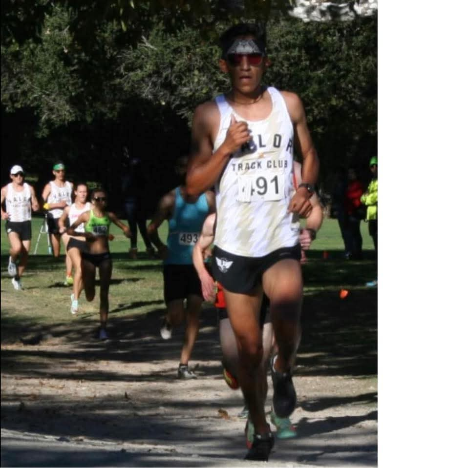
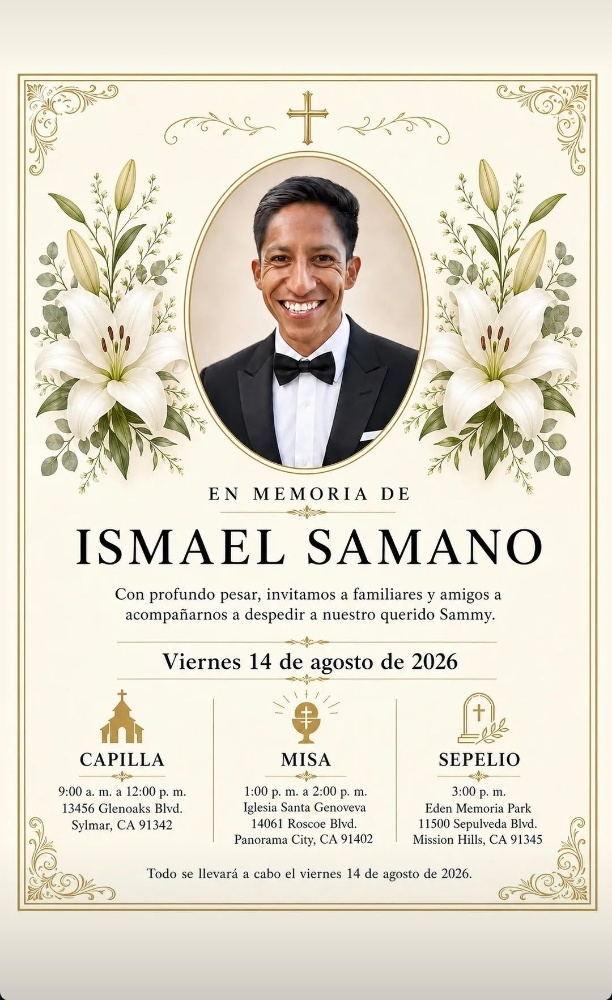
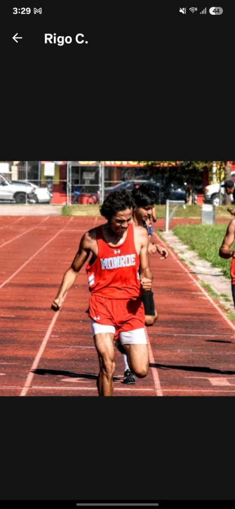

The Greatest Running Team in the San Fernando Valley.


"Dedicated to the memory of our coach, Ismael 'Sammy' Samano. After leaving his mark as a fierce competitor for Monroe High School, he returned to his roots as an assistant coach to guide the next generation. Sammy was far more than an instructor—he was a mentor and a father figure who built this team's foundation. He went out of his way to buy food, clothes, and running shoes for athletes in need, inspiring the youth by showing what limitless selflessness truly looks like. Coaching memorable runners such as Rigo, Malcolm, and Jorge, his impact shaped our character just as much as our times. Though he passed away after a brave battle with cancer, the grit, work ethic, and family values he instilled will never fade. Every mile we race is in his honor."
An easy, conversational pace run focused on active recovery and shaking out the legs.
Off-road effort combining technical trails with structured intervals and hill repeats.
Early morning endurance run hitting the trails to build the aerobic base. All paces welcome.

As a proud disciple of Coach Sammy, Rigoberto returned to the sport under his relentless mentorship, enduring grueling 5:00 AM workouts alongside his loyal dog, Mercy. That grit forged a city title victory—won despite an active lung infection—and led to over 200 race victories for Monroe High School.
Despite an abysmally terrible college running career that he prefers to ignore, his ego remains fully intact. Known as the self-proclaimed "Most Handsome Narcissist" while hosting the AM Runs YouTube channel, Rigoberto has now channeled his drive into something greater. Back on home soil, he co-founded Sammy's Club to give back, mentor the youth, and carry Coach Samano's fiery legacy into every stride.
Reach out below to connect with the pack.